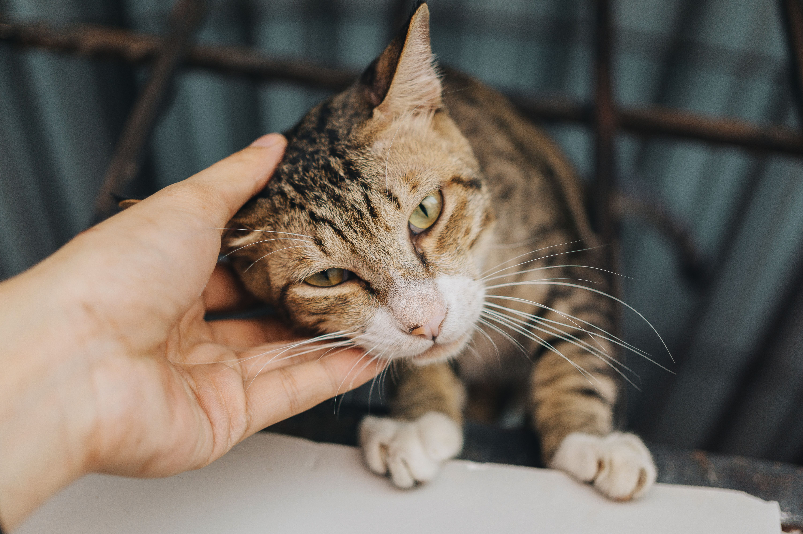

REFUGIO & RESCATE ANIMAL
Sobre nosotros
Desde 2018 cuidamos, sanamos y encontramos hogares para animales en situación de abandono. Creemos en segundas oportunidades y en un futuro donde cada patita tenga un hogar lleno de amor.

Nacimos del compromiso por defender vidas inocentes
Patitas Buenas comenzó como una pequeña iniciativa vecinal en 2018 al comprobar la vulnerabilidad de decenas de perros y gatos desamparados. Lo que inició como casas de acogida temporales se transformó paso a paso en un refugio integral equipado con atención médica, rehabilitación física y un equipo multidisciplinar volcado en cada rescate.
No somos simplemente un lugar de paso: somos un espacio seguro de transición donde cada animal recupera la confianza en las personas, recibe tratamiento compasivo y espera con dignidad a su familia definitiva.
850+
Vidas transformadas
100%
Protocolo veterinario ético
Misión
Proporcionar un refugio seguro y atención médica a animales abandonados, promoviendo la adopción responsable y fomentando la conciencia sobre el bienestar animal en la comunidad.
Visión
Ser un referente en la protección animal, logrando que cada animal rescatado encuentre un hogar amoroso y contribuyendo a una sociedad más compasiva y consciente del bienestar de los animales.